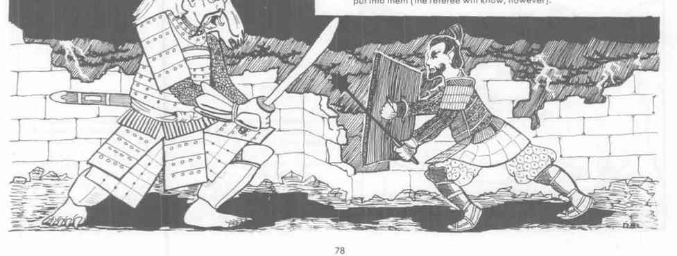

雷神（雷电之神与弓手守护者） · Raiden
Raiden 是中立强大神，AC −8，337 点生命值，魔法抗性 80%，位于空气元素位面。他有粗糙鳞皮、爪手和巨腹，能随意变形，召下闪电并制造天气；+3 黑色钉头锤每击造成 2–20 点伤害，+3 黑鳞甲与 +4 附魔盾能抵消一次攻击和低阶法术。
Raiden 的双鼓能制造只影响敌人的恐慌；作为弓手守护者，他会赐予精心制作的箭矢以真正的杀伤力，甚至让凡人在一生中制造十支能杀死目标的箭。日本战士和神官会把这些箭视为神意的证明，而不是普通魔法物品。
